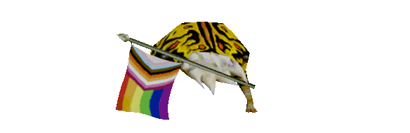

Vídeos Daora
VIDEO 1 - O minino e o átomo
história animada feita totalmente de ÁTOMOSVIDEO 2 - O asteróide
UM ASTEROIDE RAPÁVIDEO 3 - Goldsrc forever
Um monte de jogo goldsrc em um especial de 20 anos de aniversário do half-lifeVIDEO 4 - Door stuck
Nada a cimentar, apenas sentir.VIDEO 5 - Tartaruga
afahfjahkahjskljasjfskfffffffjjjjj
Fotos:
-texturas do Quake e Doom feitas pela IDsoftware
-foto do bolo de cenoura no menu
-foto do bolo de cenoura no bolo attack
-fotos de jogos source engine pegos na loja steam
-print desse mod de doom
-foto do jojo modificada e balao HD por mim mesmo lol
-me esqueci de onde peguei a foto do espaco mas vou deixar linkado caso eu lembre
-gordon dançando daque
-print do quake pego na comunidade steam
-print do mine feito pela 4j studios
-bullsquid versão pride pego no bullsquid.com
-foto do pao com banana do meu parça (eu acho)
Outros:
-código base usado para a criação do bolo attack
-animações braba em keyframe graças aos ensinamentos da w3schools
-um salve pro ricardo

-texturas do Quake e Doom feitas pela IDsoftware
-foto do bolo de cenoura no menu
-foto do bolo de cenoura no bolo attack
-fotos de jogos source engine pegos na loja steam
-print desse mod de doom
-foto do jojo modificada e balao HD por mim mesmo lol
-me esqueci de onde peguei a foto do espaco mas vou deixar linkado caso eu lembre
-gordon dançando daque
-print do quake pego na comunidade steam
-print do mine feito pela 4j studios
-bullsquid versão pride pego no bullsquid.com
-foto do pao com banana do meu parça (eu acho)
Outros:
-código base usado para a criação do bolo attack
-animações braba em keyframe graças aos ensinamentos da w3schools
-um salve pro ricardo